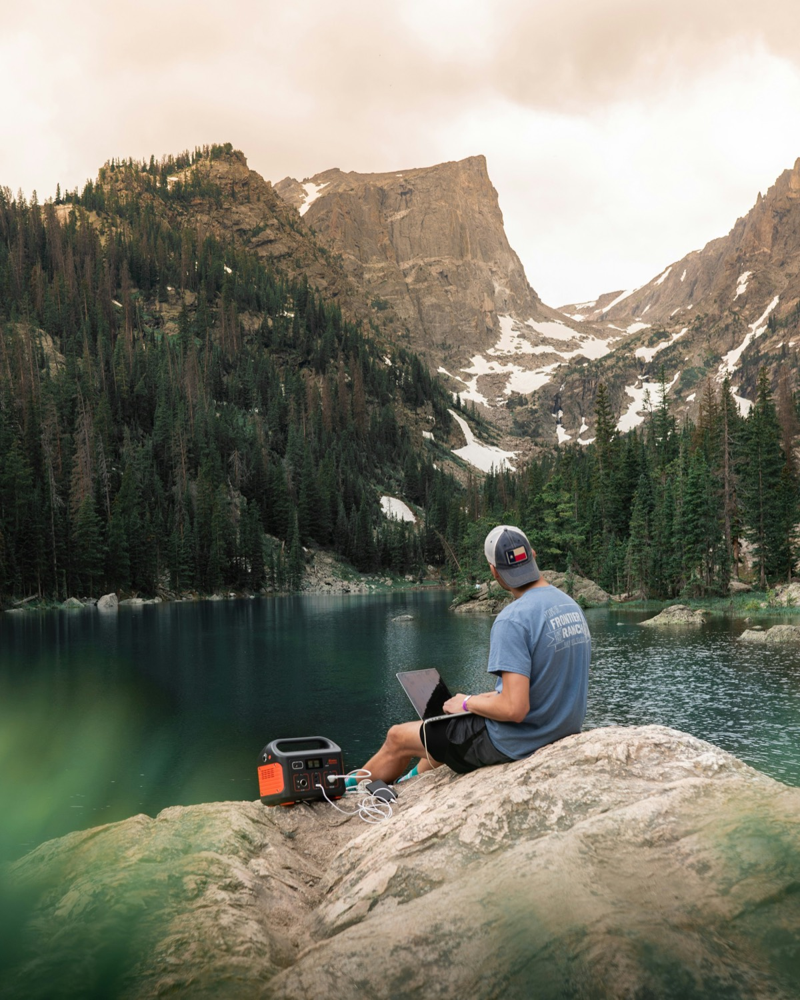
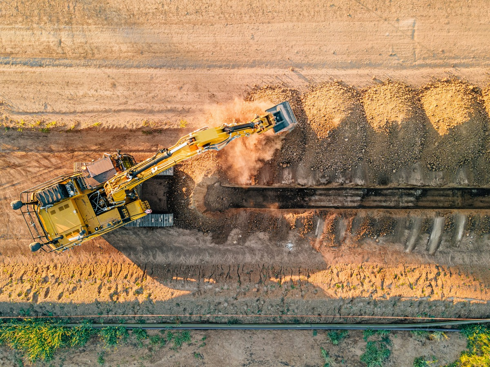
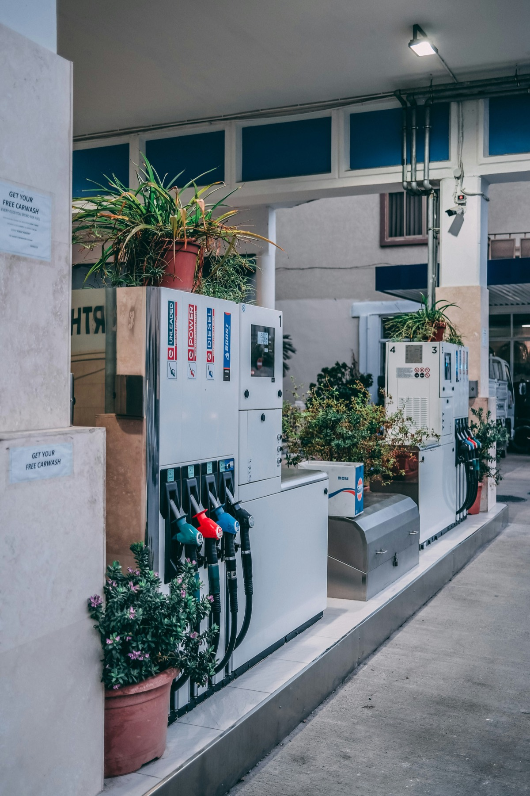
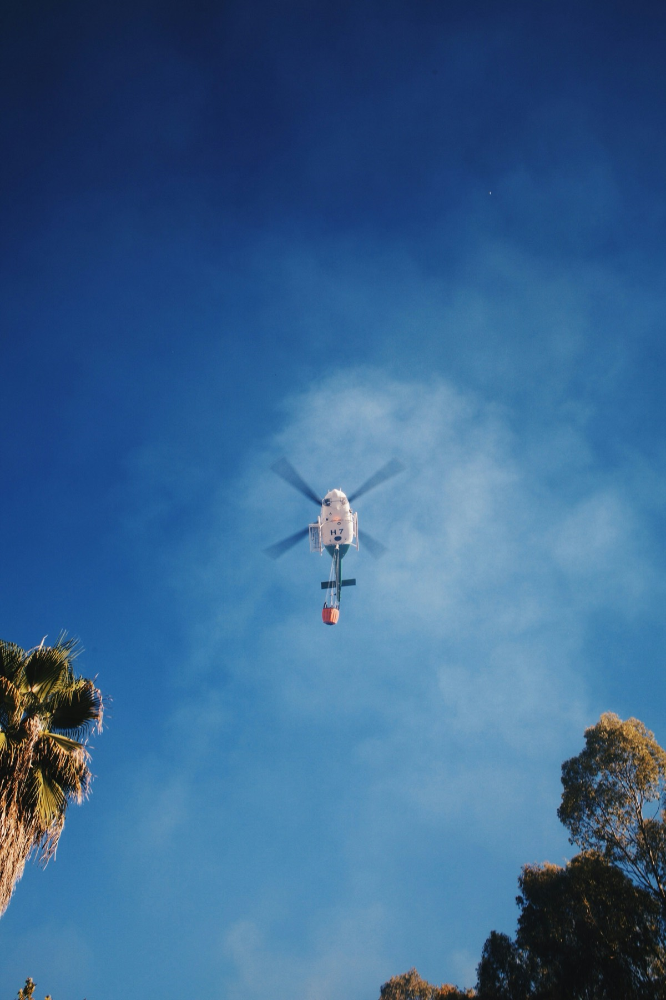

Light to Carry.
Long on Power.
When people push their limits or head into the unknown, the power has to go with them. As drones, robots and AI take on more of that work, mobile power matters more, not less.
Today the choice you carry is a lithium station or a piston set. Each has pushed one of those limits and surrendered another.
Micronturbo moves every one of them.
Micronturbo builds microturbine generator systems — a jet engine shrunk to the size of a fire extinguisher, spinning past 160,000 rpm, turning a generator instead of a fan. It is the first architecture below 300 kW that is neither a battery nor a piston engine, and that is why the numbers below look the way they do.

A generator that cannot reach the site may as well not exist. The jobs that need power most — a collapsed building, a ridge line, a fourth floor with no lift — are the ones a wheeled box never reaches. Only what a person can carry in gets there.

Power density decides whether a drone flies for thirty minutes or five hours, and whether a robot works a shift or an errand. Move this number, and whole industries move with it.
A machine that will not turn over at −40 °C, or at 4,000 meters up, is not underperforming — it could be life or death. The same goes for the battery that quietly gave up its charge overnight. Power counts for nothing until you can count on it.

The fuel on site is whatever is available, not what the manual asked for. More fuel options mean the machine adapts to the place, not the other way around. AC and DC out of the same box mean it adapts to the user, not the other way around.

A generator’s real price is what it costs across every hour you run it, not what you paid at the counter. A machine that fades as it ages charges you twice. The one that lets you stop watching it is still at rated output on the last hour of its service life.
Low emissions at the point of use are not the same as low emissions at the plant that made the power, or across the miles that moved it. Choosing the fuel means choosing the emissions.
Two Systems at Launch
They complete each other. Each replaces a different class of equipment.
MT-6K
The versatile one. Carried by one person, and the first generator small enough to power a walking robot's compute stack.
MT-75K
The heavy duty one. Industrial power that travels, and enough of it to keep an aircraft flying past the point a battery gives up.
More in pipeline
Three further systems follow the launch pair, each opening a segment the first two do not reach.